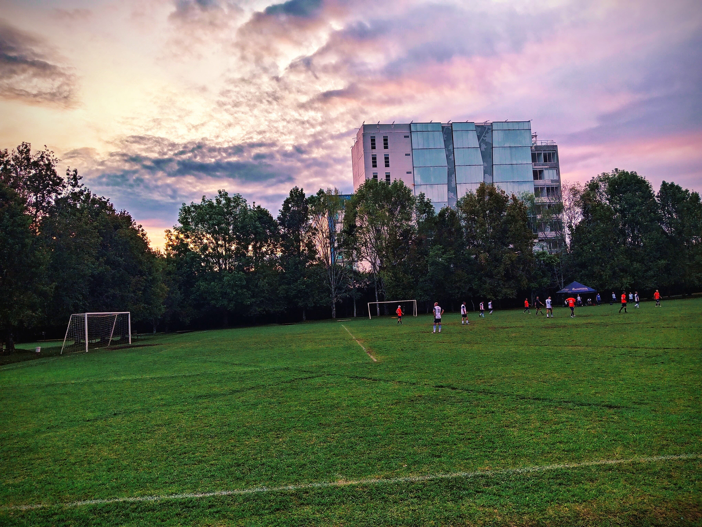
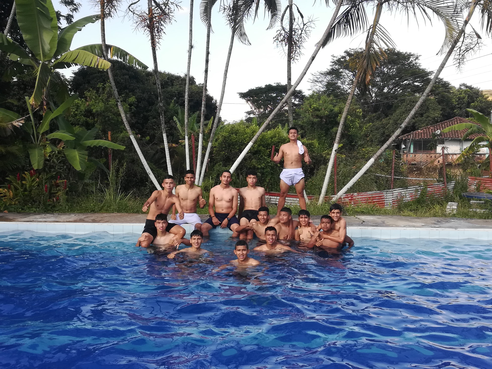
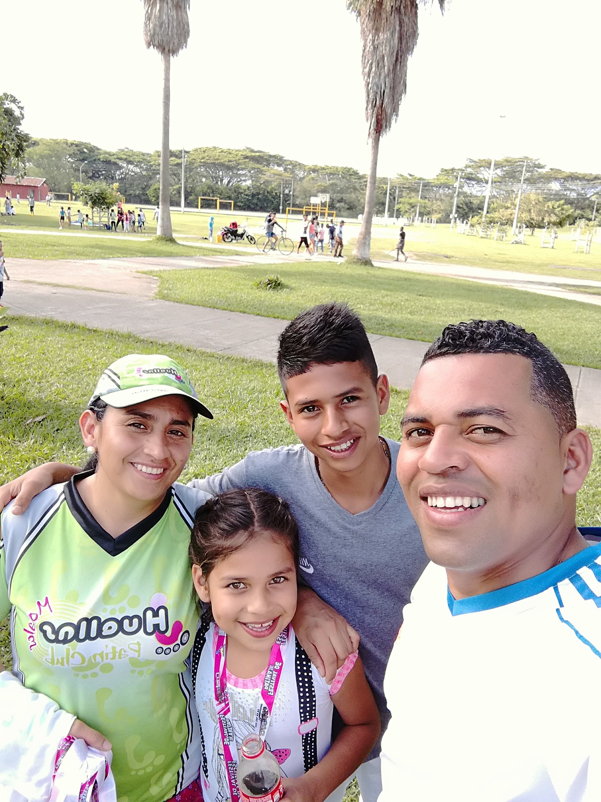

Fútbol - Mi Pasión
El fútbol es más que un deporte para mí, es algo que no todos podrían entender al estar dentro del campo de juego.
El Ritmo de Mi Vida
La música me acompaña en cada momento, estos son mis artistas favoritos:
- Benito Antonia Martínez Ocasio, conocido por Bad Bunny
- UNIVERSE
- GRUPO NICHE

Admirando a Cristiano Ronaldo
CR7 es mi inspiración en el deporte y la vida.
"Correr por correr o correr por salud mental y corporal"
Trotar no solo mejora mi condición física, sino también mi claridad mental.

Videojuegos
Los videojuegos también despejan mi mente al igual de llevarlo a un desafío.
Estos son mis juegos favoritos:
- PES 2013
- The last Us
- Call Of Duty Black Ops 2


Paz y Relajación: Salidas a Piscinas
Las salidas a las piscinas son innolvidables con tus amigos, familiares. Donde despejas tu mente y relajas tu cuerpo.
Momentos Familiares
Las salidas en familia son los momentos que más debemos disfrutar, son momentos únicos que solo se disfrutan una vez en la vida.
